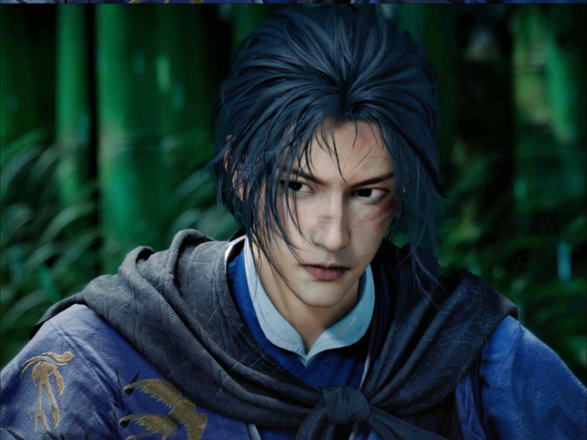

江晏有着多重身份。从血缘关系论，他是天泉弟子江远之子 。义父王清同样是天泉中人，在江远战死后收养了江晏。投身江湖后，他是燕北盟的一员，曾随义父抗击契丹。中渡桥之战后，义父王清惨被梦傀毒术 “复活”，江晏无奈忍痛了结义父，这一行为却遭人误解，背上 “弑父夺位” 的骂名，为躲避追杀，他化名 “江无浪”。
此后，江晏带着王清的遗孤（即游戏主角）踏上逃亡之路。游戏一开场，便是江晏抱着襁褓中的主角燕十六，与好友于重重追杀中夺命奔逃。最后在神仙渡隐姓埋名，以养父的身份教导主角。后江晏突然离去，踪迹成谜。主角只得孤身踏入江湖，但江晏过往的身份秘密与江湖恩怨，始终如影随形 。
【点击此处即欣赏江晏帅气打斗身姿】